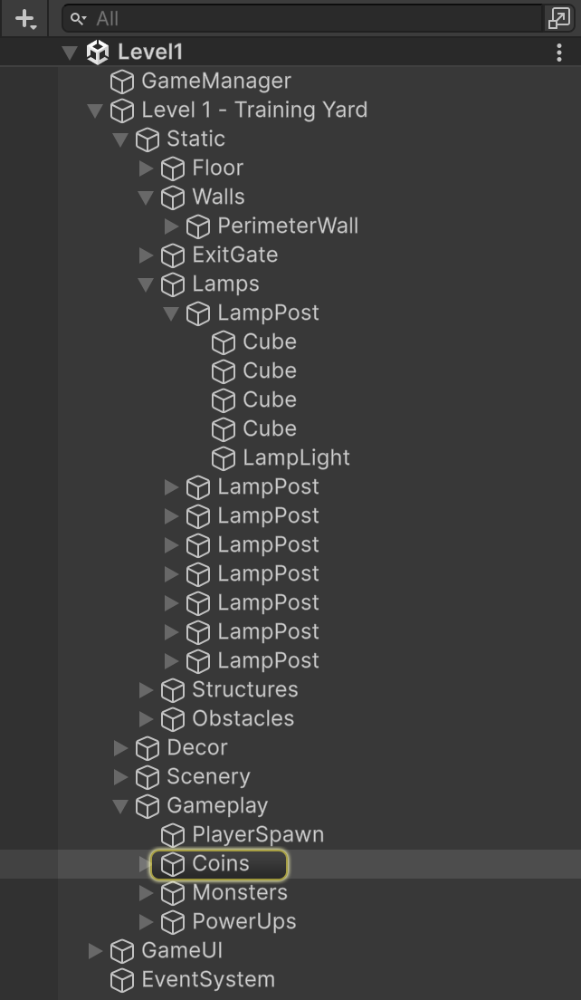
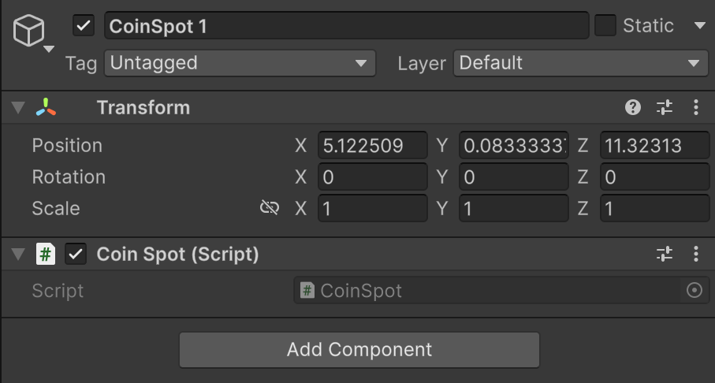
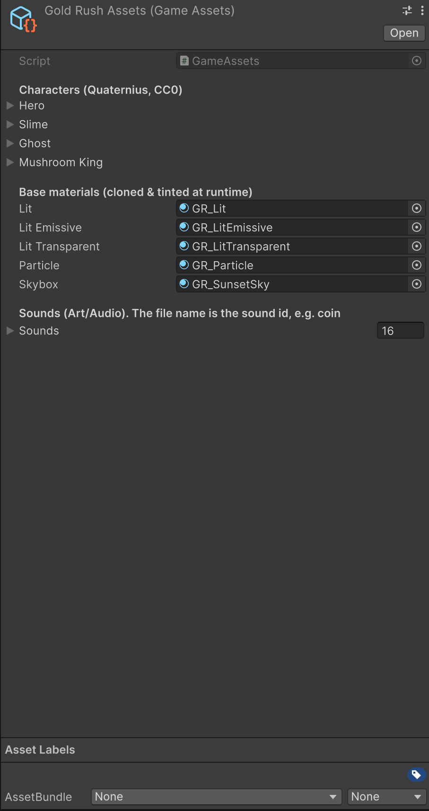
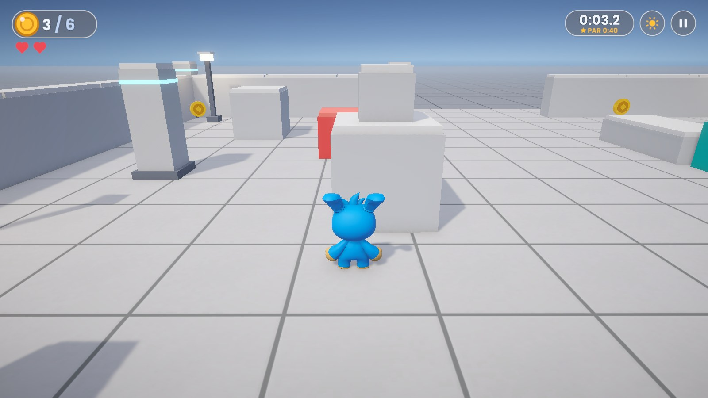
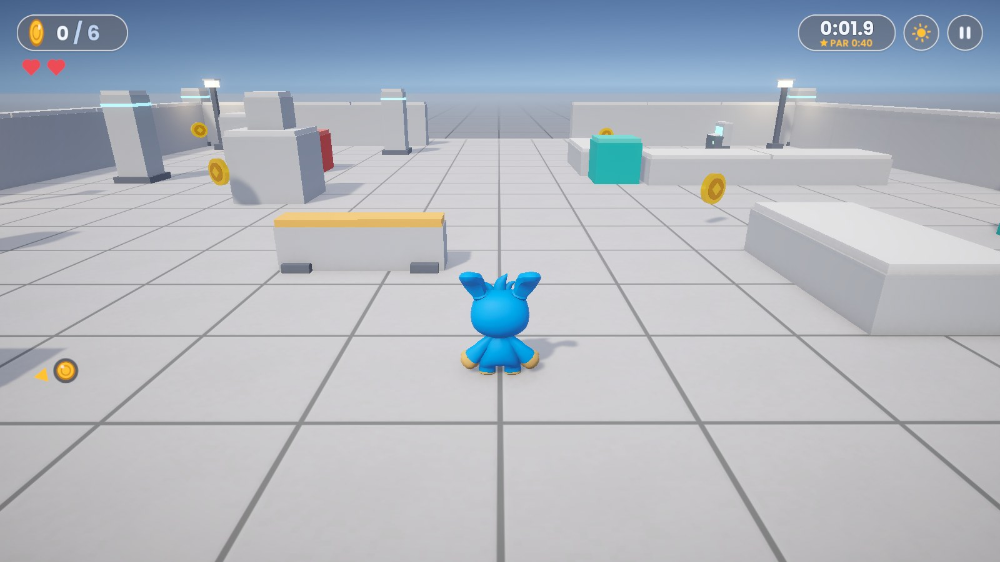
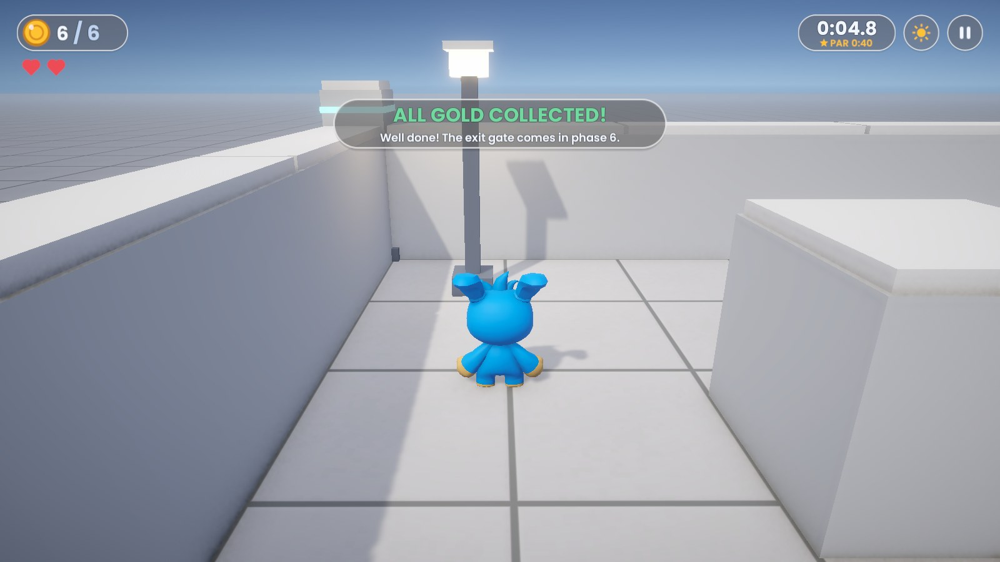

GOLD RUSH · Phase 5
Coins
Gold comes into the yard. The package adds six CoinSpot markers. When you press Play, the GameManager makes a floating, spinning coin at each one. Run into a coin: it is gone, you hear the coin sound, and the counter on the HUD goes up.
1What you get
Everything from Phase 4, plus:
| New in this phase | What it does |
|---|---|
Gameplay/Coins with CoinSpot 1 … CoinSpot 6 | Empty markers on the floor. A coin appears 1 m above each one. |
CoinSpot.cs (Scripts/Level) | The marker script. It only draws a gold ball in the Scene view. |
Coin.cs (Scripts/World) | Makes the coin (in code), lets it bob and spin, and removes it when you take it. |
| GameManager: coin pickup | Counts the coins, plays the sound, updates the HUD counter. |
Package: GoldRush_Export/Packages/GoldRush_Phase05_Coins.unitypackage
2Import the package
- Make a new Universal 3D project and set it up like in Phase 0. Or delete the folder
Assets/GoldRushin your project first. - Assets → Import Package → Custom Package… →
GoldRush_Phase05_Coins.unitypackage→ Import. - Wait for the compile. No red errors in the Console.
- File → Build Profiles → Scene List:
Scenes/MainMenu(number 0), thenScenes/Level1. - Open
Assets/GoldRush/Scenes/Level1.unity.
3Check
3.1 The level root
Select Level 1 - Training Yard. It has the component Level Scene with Arena Half = 16 (the yard is 32 × 32 m). The GameManager looks for coins only inside this object. In the Scene view a yellow square shows the play area.

3.2 The six coin spots
Open Level 1 - Training Yard/Gameplay/Coins. There are six markers, CoinSpot 1 to CoinSpot 6. They have no children: there is no coin in the scene yet.

3.3 One coin spot
Select CoinSpot 1. It has only a Transform and Coin Spot (no fields). Its Position is about 5.1, 0.08, 11.3: on the floor. In the Scene view you see a gold ball 1 m above it: that is where the coin will float.
| Marker | Position (about) | Marker | Position (about) |
|---|---|---|---|
CoinSpot 1 | 5.1, 0.08, 11.3 | CoinSpot 4 | -7.4, 0.08, 0 |
CoinSpot 2 | -6.5, 0.08, -12.5 | CoinSpot 5 | -14.4, 0.08, 12.7 |
CoinSpot 3 | 14.3, 0.08, -7.4 | CoinSpot 6 | 4.9, 0.08, -1.9 |

3.4 The sounds in GoldRushAssets
Select Assets/GoldRush/Resources/GoldRushAssets. Open Sounds: 16 clips from Art/Audio. The file name is the sound id: AudioFX.Play("coin") plays coin.wav. This phase uses coin; gate comes in Phase 6.

3.5 Play mode: the coins
Press ▶ Play. Look at the Hierarchy while the game runs: a new object Dynamic (runtime) holds six Coin objects. Each has a child Visual (the gold disc and star). Only Visual moves, so the pickup point stays still.

3.6 Play mode: the coin counter
At the top of the Game view, the HUD shows the coin counter: 0 / 6. It is made by code for now (the scene HUD comes in Phase 9).

4How it works
When the level starts, the GameManager reads the markers and makes the coins (Scripts/Gameplay/GameManager.cs):
foreach (var c in scene.GetComponentsInChildren<CoinSpot>())
{
var placed = c.GetComponentInChildren<Coin>();
if (placed) coins.Add(placed); // a Coin placed by hand
else l.coinPoints.Add(c.transform.position); // an empty marker
}
// later, in Build():
foreach (var p in layout.coinPoints) coins.Add(Coin.Create(layout.dynamicRoot, p));Every frame, Update() checks the distance from the hero to each coin:
Vector3 pp = Player.transform.position + Vector3.up * 1f;
for (int i = coins.Count - 1; i >= 0; i--)
{
Vector3 d = coins[i].transform.position - pp;
if (d.sqrMagnitude < 1.45f * 1.45f) { var c = coins[i]; coins.RemoveAt(i); CollectCoin(c); }
}- No colliders, no triggers. Closer than 1.45 m = taken. This is simple, fast, and never misses.
- The hero's position is at his feet.
+ Vector3.up * 1fcompares at coin height. - The loop goes backwards, because it removes coins from the list while it loops.
sqrMagnitude < 1.45 * 1.45is the same as "distance < 1.45", but without a square root.CollectCoin()adds 1, plays"coin"(a little higher each time), shows "+1", flies a coin to the counter. After the last coin it callsAllCollected().
The coin moves itself in Coin.Update() (Scripts/World/Coin.cs):
visual.localPosition = new Vector3(0f, Mathf.Sin(t * 2.2f + phase) * 0.12f, 0f); // bob 12 cm
visual.rotation = Quaternion.Euler(0f, t * 140f + phase * 57.3f, 0f); // spin 140°/sphase is random for each coin, so they do not all move together.
5▶ Press Play
You should see:
- The intro says Collect all 6 gold, then 3, 2, 1, GO!
- Six coins float and spin, each at its own rhythm. The HUD shows
0 / 6. - Run into a coin: it is gone, you hear the coin sound, "+1" pops up and the counter goes up.
- After the 6th coin: the toast ALL GOLD COLLECTED!, the gate sound, and the gate opens. (The gate is Phase 6.)
- No red errors in the Console.

6Try it
- A seventh coin. Select
CoinSpot 6, press Ctrl+D (Cmd+D) and move the copy to a free place (Y stays about0). Press Play: the counter shows0 / 7. Delete the copy afterwards. - A crazy spin. In
Scripts/World/Coin.cs, changet * 140ftot * 600f, and* 0.12fto* 0.5f. The coins spin fast and jump high. - A bigger reach. In
Scripts/Gameplay/GameManager.cs, change1.45f * 1.45fto3f * 3f. You take coins from 3 m away.
Change the numbers back when you are done.
7Common problems
| Problem | Fix |
|---|---|
| I do not see any Coin in the Hierarchy. | Normal. The coins exist only in Play mode, under Dynamic (runtime). |
| Warning: "This level has no CoinSpot objects". | The CoinSpots must have the Coin Spot component and be inside Level 1 - Training Yard. |
| A coin floats inside a block, or I cannot reach it. | Move its CoinSpot to a free place on the floor. |
| No coin sound. | Sound is off in the menu Settings, or the Sounds list in GoldRushAssets is empty. Console: "[AudioFX] Unknown sound id: coin" means coin.wav is missing. |
The counter says 0 / 7 but you wanted 6. | A CoinSpot copy is left over. Delete it. |
More fixes are on the Troubleshooting page.
Checkpoint package: GoldRush_Phase05_Coins.unitypackage